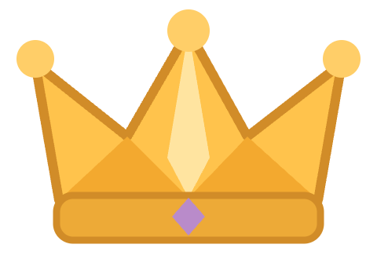
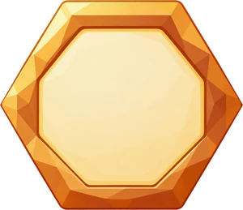
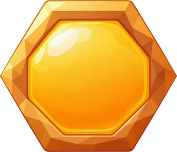
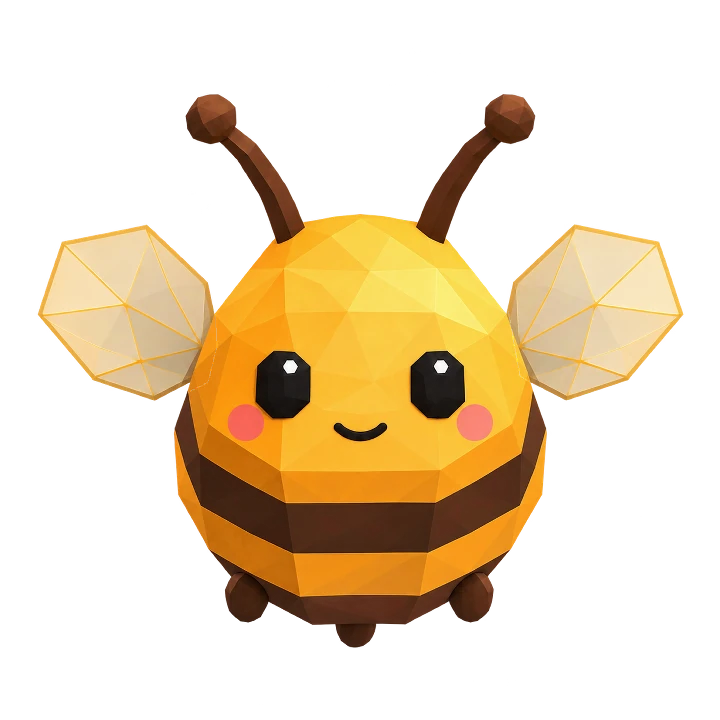
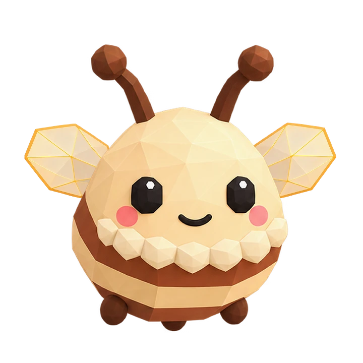
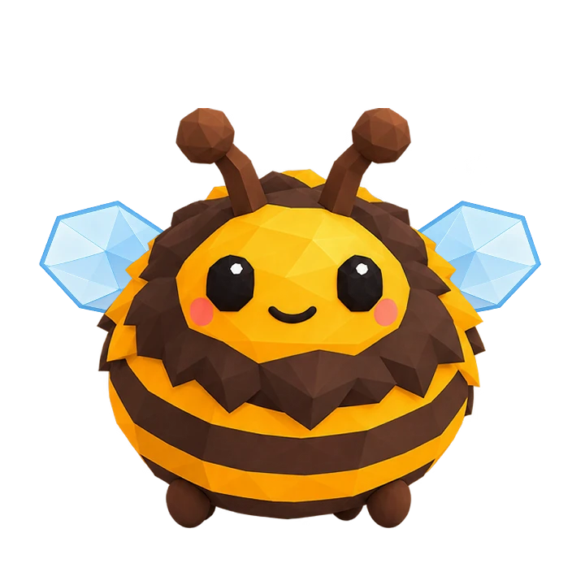
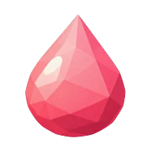

<!doctype html><html lang="ru"><meta charset="utf-8"><meta name="viewport" content="width=device-width,initial-scale=1"><title>Квота · существующий улей</title><style>
@font-face{font-family:N;src:url('../assets/Nunito-Bold.ttf');font-weight:700}@font-face{font-family:N;src:url('../assets/Nunito-Black.ttf');font-weight:900}*{box-sizing:border-box}body{margin:0;background:#e8dfce;color:#4a2c12;font:700 14px N,sans-serif}.phone{width:100%;max-width:412px;height:100dvh;min-height:640px;margin:auto;background:url('../assets/hive_bg.webp') center/cover;display:flex;flex-direction:column;padding:12px 16px 16px;gap:10px}header{display:flex;align-items:center;gap:10px}button{font:inherit;color:inherit;border:0;cursor:default}.back{width:44px;height:44px;border-radius:16px;background:#fff9ee;font-size:26px}h1{font-size:18px;margin:0;font-weight:900}small{font-size:12px;color:#9c7b5b}.tag{margin-left:auto;font-size:11px;color:#9c7b5b}.quota{padding:12px 14px;background:#fff9eef5;border-radius:20px}.row{display:flex;align-items:center;justify-content:space-between;gap:8px}.row img{width:24px;height:24px;object-fit:contain}.row strong{font-size:19px;font-weight:900}.meter{height:9px;border-radius:8px;background:#f0e1c4;overflow:hidden;margin:7px 0 5px}.meter i{display:block;width:53.33%;height:100%;background:#ffb51f;border-radius:8px}.scene{flex:1;min-height:245px;position:relative;display:flex;align-items:center;justify-content:center}.grid{width:300px;height:278px;transform:scale(.88);position:relative}.hex{position:absolute;width:60px;height:52px}.bee{position:absolute;width:46px;height:52px;object-fit:contain}.stock{display:flex;justify-content:center;gap:24px;background:#fff9eed9;border-radius:22px;padding:8px 16px;align-self:center}.stock span{display:flex;align-items:center;gap:5px}.stock img{width:22px;height:22px;object-fit:contain}.jobs{background:#fff9eef5;border-radius:20px;padding:13px 14px}.edit{height:44px;background:transparent;color:#9b681f;margin:-10px -4px -10px 0;font-size:13px}.counts{display:flex;justify-content:space-between;margin-top:10px;font-size:13px;color:#9c7b5b}.counts b{color:#4a2c12;margin-left:4px;font-size:17px}.launch{width:100%;min-height:50px;background:#ffb51f;box-shadow:0 4px 0 #d88a08;border-radius:19px;font-size:17px;font-weight:900}.footnote{text-align:center;font-size:11px;color:#9c7b5b;margin-top:-4px}
</style><main class="phone"><header><button class="back" aria-label="Назад">‹</button><div><h1>Королевская квота</h1><small>Год 2 · Лето</small></div><span class="tag">Забег</span></header><section class="quota"><div class="row"><span class="row">Квота короне</span><strong>96 <small>/ 180</small></strong></div><div class="meter"><i></i></div><div class="row"><small>Нужно ещё 84 мёда</small><small>Сдать после зимы</small></div></section><div class="scene"><div class="grid"></div></div><div class="stock"><span><b>12</b> пчёл</span><span><b>48</b> нектара</span></div><section class="jobs"><div class="row"><b>Работы на сезон</b><button class="edit">Изменить ›</button></div><div class="counts"><span>Вылазка <b>4</b></span><span>Мёд <b>6</b></span><span>Выводок <b>2</b></span></div></section><button class="launch">Следующий сезон</button><div class="footnote">Клеверная поляна · низкий риск</div></main></html>